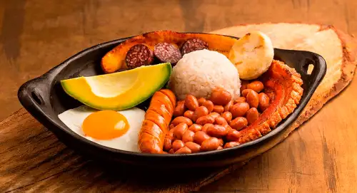
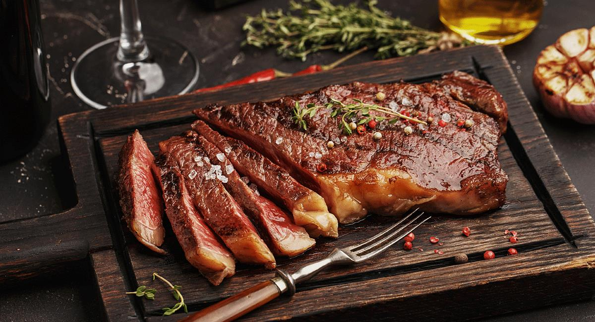

La comida colombiana es el resultado de una fusión de influencias indígenas, europeas y africanas a lo largo de los siglos. Antes de la llegada de los españoles, los indígenas colombianos consumían maíz, yuca, carne y frutas tropicales. Con la llegada de los españoles, se introdujeron ingredientes como el trigo, el arroz, la caña de azúcar y las especias, que se mezclaron con los sabores y técnicas indígenas. Durante la época colonial, la influencia africana se hizo presente debido al comercio de esclavos, aportando el uso de especias y técnicas culinarias. A lo largo de las regiones de Colombia, se desarrollaron especialidades culinarias únicas. En la región andina, platos como la bandeja paisa y el ajiaco son populares. En la costa caribeña, se destacan el arroz con coco y el ceviche. En el Pacífico, los mariscos y el plátano son ingredientes clave. En el oriente del país, se disfruta de carne de res y productos lácteos. Además, la cocina colombiana se enriquece con una amplia variedad de postres tradicionales, como las arequipeñas y los buñuelos. La diversidad geográfica y cultural de Colombia se refleja en su cocina, que es variada y sabrosa, con sabores auténticos transmitidos a lo largo de las generaciones. La comida colombiana es un tesoro culinario que refleja la riqueza cultural y la historia del país.
La bandeja paisa es un plato emblemático de Antioquia, Colombia. Se sirve en una generosa bandeja y combina arroz blanco, frijoles rojos, carne molida o cerdo desmenuzado, chicharrón crujiente, chorizo, huevo frito, plátano frito, aguacate y arepa. Esta deliciosa combinación de sabores y texturas refleja la rica tradición culinaria de la región. La bandeja paisa es apreciada tanto por locales como por visitantes, y se considera un plato representativo de la gastronomía colombiana. Es una opción indulgente y satisfactoria para aquellos que disfrutan de una comida abundante y llena de sabores intensos.
Consiste en arroz blanco cocido y un huevo frito encima, una preparación simple pero sabrosa comúnmente disfrutada en el desayuno o almuerzo. Se puede acompañar con aguacate, plátano frito u otras opciones, reflejando la influencia de ingredientes locales y la cultura culinaria caribeña. Es una comida reconfortante apreciada por su sencillez y sabor auténtico, evocando nostalgia en quienes lo disfrutan, transportando a recuerdos de hogar y tradición. El arroz con huevo captura la esencia de la cocina caribeña, donde los sabores simples pero deliciosos crean una experiencia culinaria única y arraigada en la identidad cultural de la región.
La carne a la plancha es un plato popular en la región Orinoquia de Colombia. Se cocina directamente en una plancha caliente, resaltando su sabor natural. La carne de res se corta, sazona con sal y pimienta, y se cocina a fuego medio-alto. Es tierna y jugosa, y se puede acompañar con guarniciones como yuca, plátano frito o ensalada. Es apreciada por su simplicidad y por resaltar la calidad de la carne.
